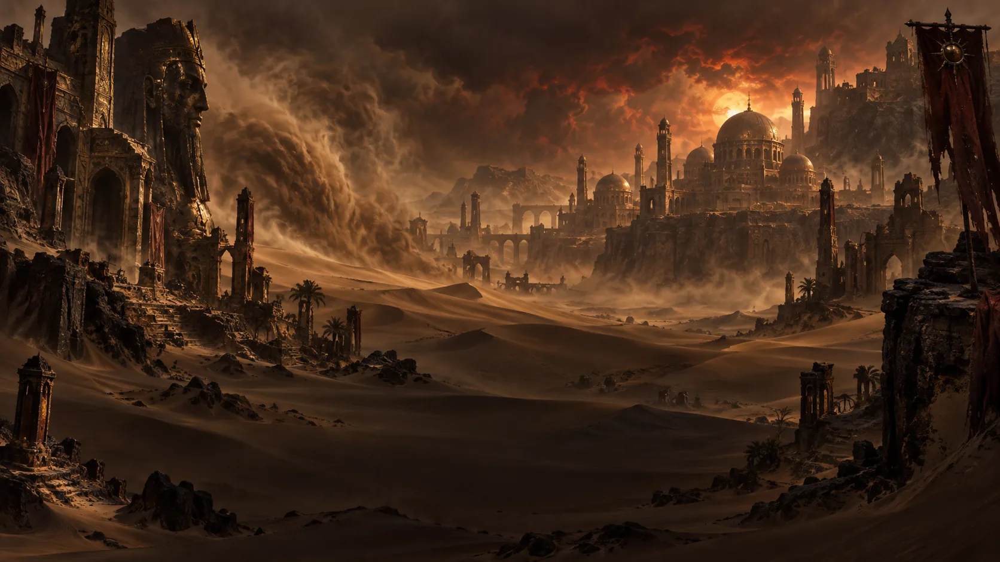

Caldeum
Einst prächtige Handelsmetropole am Rand der Wüste, heute größtenteils Ruine – ihre eingestürzten Paläste erzählen von vergangenem Reichtum und dem Preis, der dafür gezahlt wurde.
Die Wiege großer Reiche liegt zwischen endlosen Dünen, versunkenen Tempeln und den Mauern des einst mächtigen Caldeum. Reichtum, Religion und Verderbnis haben Kehjistan geprägt – die Wüste bewahrt die Überreste alter Zivilisationen ebenso wie den Einfluss der Großen Übel.
Kehjistan war einst eines der bedeutendsten Reiche der Menschheitsgeschichte. Hier entstanden frühe Hochkulturen, Wissenschaft und systematische Magieforschung. Mächtige Magierclans wie die Vizjerei prägten über Jahrhunderte das Reich – und ihre Rivalitäten führten schließlich zu den verheerenden Magierclankriegen.
Auch religiös spielte Kehjistan eine zentrale Rolle. Akarats Lehren und der daraus hervorgegangene Zakarum-Glaube verbreiteten sich von hier aus über große Teile Sanktuarios. Gleichzeitig wurde das Land immer wieder zum Schauplatz des Ewigen Konflikts und dämonischer Intrigen.
Zur Zeit von Diablo IV ist von der einstigen Pracht nur noch wenig übrig. Caldeum ist gefallen, große Teile des Reiches liegen verlassen unter dem Sand und Kultisten durchstreifen die Ruinen auf der Suche nach Relikten und verbotener Macht. Gerade deshalb gehört Kehjistan zu den spannendsten Orten Sanktuarios: Fast jede Ruine kann ein Überbleibsel aus einer anderen Epoche menschlicher Geschichte sein.

Einst prächtige Handelsmetropole am Rand der Wüste, heute größtenteils Ruine – ihre eingestürzten Paläste erzählen von vergangenem Reichtum und dem Preis, der dafür gezahlt wurde.
Ein geschäftiger Küstenhafen, über den heute ein Großteil des verbliebenen Handels der Region läuft.
Von Sand überzogene Kultstätten früherer Religionen, in deren Fundamenten sich Spuren der Triune finden.
Gelehrte, Händler und Glücksritter treffen in Kehjistan aufeinander – angezogen von den Resten alter Bibliotheken, Tempelschätzen und dem, was unter dem Wüstensand noch immer schlummert.
Die Region gilt seit jeher als fruchtbarer Boden für Kulte: Die Triune, ein alter Orden, der dämonische Verehrung als Glauben an wohlwollende Gottheiten tarnt, hat hier ihre Wurzeln und ist bis heute nicht vollständig ausgerottet.
Kehjistan ist eng mit der Gründung der Horadrim verknüpft, jenes von Tyrael ins Leben gerufenen Gelehrtenordens, der dämonisches Wissen bewahren und Sanktuario vor den Übeln schützen sollte.
Der Glanz dieser Ära ist längst verblasst. Bibliotheken verfielen, Tempel wurden verlassen, und die Wüste begann, zurückzuerobern, was einst errichtet wurde.
Bis heute liegen Archive, Artefakte und alte Feinde unter Kehjistans Sand begraben – und warten darauf, wiederentdeckt oder wiedererweckt zu werden.